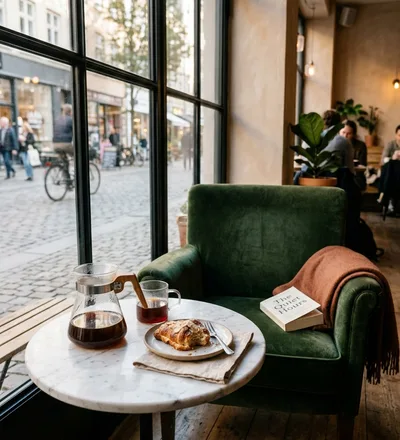

Quiero Café Alegrete
Logotipo oficial
Cafeteria central na Rua General Vitorino com cafés variados, doces, salgados e pratos.
- Endereço: Rua General Vitorino, 302
- Bairro: Centro
- Cidade: Alegrete - RS
- Telefone: (55) 99981-0999
Fronteira Oeste do Rio Grande do Sul
Consulte cafeterias, mercados gourmet e bombonieres com café no Centro de Alegrete, com telefones e mapas confirmados.

Na Fronteira Oeste gaúcha, Alegrete preserva a hospitalidade do Pampa em um centro urbano movimentado ao redor da Praça Getúlio Vargas. Quem procura por cafeteria perto de mim na cidade encontra estabelecimentos bem próximos entre si, reunindo cafés especiais, mercados gourmet e docerias.
Para escolher onde tomar café em Alegrete, basta percorrer o quadrilátero central formado pelas ruas General Vitorino, Vasco Alves, Venâncio Aires e Gaspar Martins.
Estabelecimentos reais conferidos em fontes públicas em 15/11/2026.
Logotipo oficial
Cafeteria central na Rua General Vitorino com cafés variados, doces, salgados e pratos.

Imagem ilustrativa
Cafeteria alegretense situada no Centro, voltada a expressos, cafés passados e lanches.
Imagem ilustrativa
Mercado gourmet e cafeteria no Centro de Alegrete com seleção de produtos artesanais e cafés.
Imagem ilustrativa
Ponto dedicado a pausas para café, bebidas geladas e acompanhamentos rápidos.
Imagem ilustrativa
Bomboniere, doceria e cafeteria central com chocolates, tortas e café.
Aviso: Endereços, telefones e horários podem sofrer alterações. Confirme com o estabelecimento ou consulte nossas fontes de verificação.
Áreas de destaque pesquisadas: Centro, Cidade Alta, Prado. A concentração no Centro facilita comparar propostas distintas em poucos quarteirões: há opções com foco em cafés e refeições completas, mercado com produtos artesanais e café, pontos de pausa rápida para coffee break e bomboniere tradicional com chocolates e tortas.
Como muitos estabelecimentos centrais ficam próximos à praça e ao comércio, o estacionamento nas ruas laterais pode ser mais simples no início da manhã ou no meio da tarde.
As ruas General Vitorino, Vasco Alves, Venâncio Aires e Gaspar Martins concentram os estabelecimentos confirmados.
Sim, na Rua Venâncio Aires funciona um espaço que combina mercado artesanal e cafeteria.
Tanto as cafeterias da Rua General Vitorino e Vasco Alves quanto a bomboniere da Rua Gaspar Martins servem doces e café.
Com endereços confirmados na região central, o guia de Alegrete reúne referências práticas para qualquer hora do dia.
Explore também guias próximos de café, cappuccino, doces e salgados no estado: